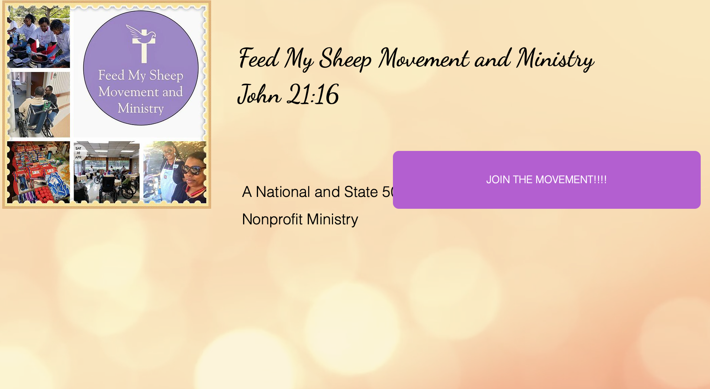
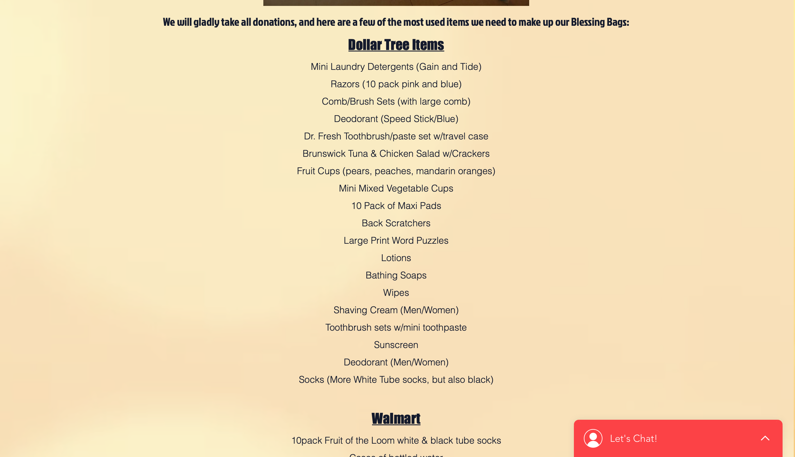

Research
To get closer to solving the problem, I did primary research on my client, Feed My Sheep. I also gathered information on various Homeless Shelters in Columbia, South Carolina. This step also included interviewing staff at Feed My Sheep and a target audience member.
Primary Client Research

While Feed My Sheep Movement and Ministry has hearts for service, their current website makes their resources hard to access. They are a national and state recognized nonprofit ministry whos goal is to "feed God's people mind, body,and soul". They focus on providing personal hygiene items, food, and clothing for veterans, the elderly,and homeless communities of Columbia, South Carolina.  Their website is in desparate need of some help. The site is impossible to navigate in browser without missing information due to no navigation bar, text that runs of the page, and overlapping elements. The website lacks a clear logo and features no sort of hierarchy. While they are doing great things in their community, it would make a lot more sense for their website to feature a navigation bar to make the information more accessible and organized. It features overwhelming typefaces, mistakenly paired colors, and animated backgrounds that do not assist in the overall message of their ministry. It is hard to gain information on their individual resources and would cause a lot of stress to any user of their site. Their Instagram account, while trying hard to post images that are applicable to them, needs some help trying to communicate the overall understanding of their ministry and providing branding that communicates their message. I think they are doing great things but need assistance in being consistent with their branding and making their resources more accessible to the population.
Columbia, South Carolina, like every city, is constantly facing issues of homelessness. Columbia has the highest population of homeless individuals in the state of South Carolina, coming in at 851 individuals. An article from The Post and Courier dived into the battle of deciphering how to help the homeless population during a pandemic. Columbia officials are encouraging homeless individuals to social distance as much as possible, but this causes issues in security and safety. Columbia is trying their hardest to help the community in their city. Multiple different homeless shelters have remained open during the COVID-19 pandemic, and the Transitions Shelter has done lots for the community in the last couple years. Possible solutions include creating a site that makes resources more accessible for people that need them or want to help donate. It could also help to make sure that the website is nicely designed in a way that allows people to use it effectively. There are two main shelters in Columbia, South Carolina. Transitions Homeless Shelter, while doing great things in the community, has a website that is hard to make their resources available. Transitions is the only center in the Midlands that offers both day services and residential services. They are a really unique place in Columbia, yet their sight is not very effectively laid out.
The Oliver Gospel Mission works with majority homeless communities but does a lot for the community in Columbia. Their website is very effective because of how it is broken down into whether you need help or want to donate. Like how Feed My Sheep does a lot of different opportunities in the community, Oliver Gospel Mission has their website broken down into their different service missions on their site. 
Secondary Research
Transitions Homeless Shelter
Oliver Gospel Mission